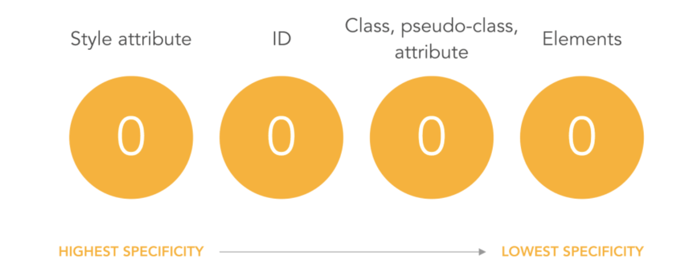

CSS specific ?
Css Specificity คือค่าบางอย่างที่จะจะบอก browser ว่าให้เลือกใช้ Style ตัวไหนมาแสดงผลหน้าเว็บ แน่นอนว่าจะต้องมีการคำนวนค่าออกมาเพื่อให้ browser รู้ได้นั่นเอง
การคำนวณหาค่า Specific
เราสามารถสร้าง style ให้กับ element ได้หลายแบบ ที่นิยมจะเป็นการเขียนแบบใช้ selector ครับ ซึ่งการเขียนแบบนี้ก็มีหลายแบบอีก เช่น
Type selectors คือการใช้ element เป็น selector เช่น h1, input, image
Class selectors อันนี้รู้จักกันดี เช่น .container, .wrapper
ID selectors ใช้ id เป็น selector เช่น #name, #profile
Attributes selectors เช่น [type=“radio”]
Pseudo-classes เช่น :hover, :active
และอื่นๆอีกมากมาย เช่น Universal selector ( * ), combinators ( +, >, ~, ' ' ), Negation pseudo-class ( :not() ), pseudo-elements ( ::before )

โดยการคำนวณ specific จะมองค่าดังรูปนะครับ ก็คือ (0,0,0,0) ยกตัวอย่างเช่น
Style attribute
จะมีค่าเป็น (1,0,0,0)
ID
จะมีค่าเป็น (0,1,0,0)

Class,Pseudo-classes
จะมีค่าเป็น (0,0,1,0)
Elements
จะมีค่าเป็น (0,0,0,1)
ซึ่งการทำงานของ specific นั้นจะทำงานเมื่อมีค่ามากกว่า ยกตัวอย่างเช่น specific ที่มีค่า (1,0,1,0) กับ (1,0,0,1) specific จะคำนวณแล้วทำงานของ (1,0,1,0)